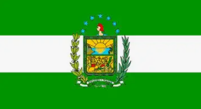
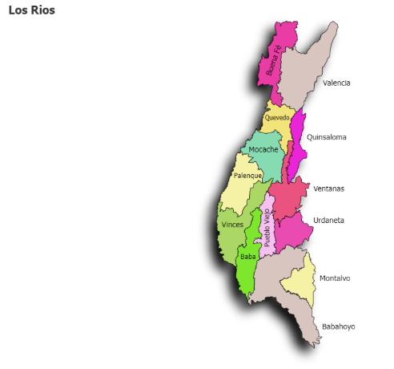

Autoridades Provinciales
Prefecto
Ing. Johnny Terán Salcedo.
Gobernador
Representante del Ejecutivo en la región encargado de coordinar las políticas de seguridad y orden público.
Portal oficial con información cultural, turística, geográfica y administrativa de la hermosa provincia de Los Ríos, Ecuador.
La provincia de Los Ríos se encuentra situada en el corazón de la región Costa del Ecuador. Su cabecera provincial y capital es la ciudad de Babahoyo. Es reconocida a nivel nacional por su tierra extremadamente fértil, siendo una potencia agrícola en la producción de banano, cacao, maíz y palma africana. Además, destaca por la riqueza cultural de su pueblo montubio, sus hermosos ríos navegables y su exquisita gastronomía tradicional.

El estandarte provincial flamea con orgullo como el emblema máximo de identidad fluminense, honrando la fertilidad de sus campos y la vitalidad de sus hermosos e importantes cuerpos de agua.
Ing. Johnny Terán Salcedo.
Representante del Ejecutivo en la región encargado de coordinar las políticas de seguridad y orden público.
De acuerdo con los registros demográficos más recientes, la comunidad fluminense alberga a cerca de 898 mil habitantes, posicionándose firmemente como una de las zonas con mayor dinamismo social y crecimiento poblacional de todo el país.
Fuente: Instituto Nacional de Estadística y Censos (INEC).

Esta representación cartográfica detalla los límites territoriales y la posición estratégica que ocupa la provincia dentro de la zona central del litoral ecuatoriano.
Selecciona un cantón para conocer su historia, parroquia, gastronomía, atractivos turísticos, alojamiento, alcalde, población y ubicación.
Provincia de Los Ríos, Ecuador.
Fecha de actualización: 2026